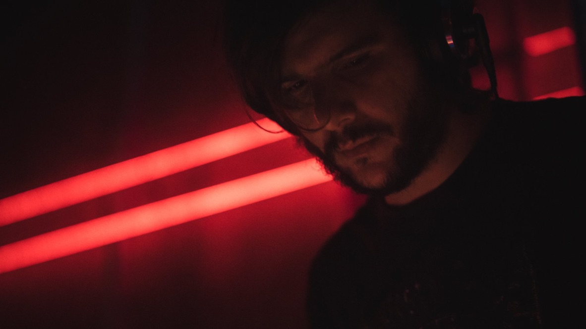

- About Me
- Discography
- Performances
- Mixes
- Soundtracks
- Gigs Log
- Press
- Contacts
- Support
Hello Visitor,
I am Alessandro Parisi and I welcome you to my website.
Here you will find all that matters about my music project, enjoy the tour!

About me
I was born in 1985 in a little city in the north-east of Italy, Pordenone. I started listening electronic music in the early '90s, when MTV was actually broadcasting music. I approached the club scene during the early '00s at the TNT Kama§utra discotheque, where Marzio Dance was the resident dj and vocalist. A lot of my influences came from the music spinned in that period, between 1996 and 2003, which was a slower and darker version of progressive-techno music. In addition to the club scene, I got influenced by my mother which plays the church organ and the home-repertory was mainly baroque and religious. In addition to this, Pordenone was the most important italian city for the punk movement origin (search for "The Great Complotto" if interested) and that of course contributed aswell to my music. In conclusion: if you put together the dark electronic sounds, the mystical melodies or chorus armonies and the rough punk punch you'll get more or less the foundations of my sound.
I spent some years searching my music path, but it was just in 2010 that I truly kicked off my current music production with the right approach. Since then I produced many releases under different labels and aliases (see discography section) and I also performed live/dj-set in different clubs all over Europe (see performances section). My music has been also used for soundtracks in TV series, fashion shows, art exhibitions and documentaries (see soundtrack section).
At the moment I am pretty much focusing in digesting the old music, more than getting updated on new one. I contribute to Intergalactic FM with mixes or editing old tracks. Since I never stopped searching, collecting and classifying music, this little obsession resulted in a huge database of different music styles which now I can put together in form of "1-hour-story-recording". I haven't stopped producing though, I just select more carefully when/if doing it.
Any further information I'd rather share over a cold beer or check the Contacts section.
Gigs Log
I have mainly performed live, but recently I started having fun also djing. Here is the diary of my gigs since now.
09/05/24 - IFM Festival (Den Haag) [Dj Set]
04/01/24 - Café Central (Brussels) [Dj Set]
02/09/23 - Studio 508 (Amsterdam) [Dj Set]
19/05/23 - IFM Festival (Den Haag) [Dj Set]
22/10/22 - Killing Time (Valencia) [Dj Set]
27/05/22 - IFM Festival (Den Haag) [Live]
06/12/21 - Unlimited Nation Streaming Festival [Live]
30/07/20 - PRC (Den Haag) [Dj set]
18/01/20 - Le Louvre (Brussels) [Dj set]
09/11/19 - КПД (St. Petersburg) [Live]
08/11/19 - Бумажная Фабрика (Moscow) [Live]
01/11/19 - Love (Milan) [Dj set]
05/09/19 - Le Louvre (Brussels) [Dj set]
07/06/19 - IFM Festival (Den Haag) [Dj set]
25/05/19 - Kunsthal (Gent) [Dj set]
29/12/18 - Modular (Pordenone) [Live]
24/11/18 - Mosaique (St. Petersburg) [Dj set]
29/09/18 - Jack (Amsterdam) [Live]
11/08/18 - Blijdrop Festival (Rotterdam) [Dj set]
26/05/18 - Mjut (Leipzig) [Live]
18/05/18 - IFM Festival (Den Haag) [Live]
21/04/18 - Yucatan Extension (Vilnius) [Live]
03/03/18 - Negasonic (Aalst) [Live]
03/02/18 - BAR (Rotterdam) [Live]
15/11/17 - PRC (Den Haag) [Dj set]
03/10/17 - Motel Campo (Genève) [Live]
15/09/17 - Griessmühle (Berlin) [Live]
28/06/17 - Radio Panik (Bruxelles) [Live]
02/06/17 - Panama Racing Club (Den Haag) [Dj set]
14/04/17 - IFM Festival (Den Haag) [Live]
25/02/17 - Klub Kegelbahn (Luzern) [Live]
17/02/17 - Sala Siroco (Madrid) [Live]
26/08/16 - Moog Club (Barcelona) [Live]
23/04/16 - Vila Štvanice (Prague) [Live]
22/04/16 - Metro Chill Out (Olomouc) [Live]
27/11/15 - Specka (Madrid) [Live]
24/05/15 - Batofar (Paris) [Live]
25/04/15 - Goldhorn (Leipzig) [Live]
24/04/15 - Griessmühle (Berlin) [Live]
05/12/14 - IfZ (Leipzig) [Live]
29/11/14 - Studio 80 (Amsterdam) [Live]
22/11/14 - Klub Kegelbahn (Luzern) [Live]
20/09/14 - Ventiquattro (Brescia) [Live]
19/09/14 - Sacrestia F.A. (Milano) [Live]
22/03/14 - Ventiquattro (Brescia) [Live]
28/02/14 - Specka (Madrid) [Live]
22/02/14 - Kraftfeld (Zürich) [Live]
19/12/13 - Ca' dei Ricchi (Treviso) [Live]
16/11/13 - Batofar (Paris) [Live]
25/05/13 - PopCorn (Venezia) [Live]
20/04/13 - Loch (Zürich) [Live]
22/09/12 - Teatro Lo Spazio (Roma) [Live]
28/04/12 - SpazioConcept (Milano) [Live]
Discography
Below a personal selection of my releases.
To consult the full discography check here.
You can find anyway my music in all streaming platforms (iTunes, Spotify, YouTube, Soundcloud, etc.)
Performances
Some video recordings available in the web I selected to represent my different type of performances
Treviso (IT) - 2013
Le Batofar, Paris (FR) - 2013
Specka, Madrid (ES) - 2014
Kraftweld, Zurich (CH) - 2014
Yucatan Extension, Vilnius (LT) - 2018
Mixes
Here you can find the most exhaustive list of mixes I recorded so far.
https://videohotmix.net/A/Alessandro.Parisi/
Soundtracks
Original Motion Picture Score for "An Italian Garage" episode:
Original track for Lancia Rally 037
"Hesperius Draco's Requiem" featured in "Art & Mind" movie
Katie Gallagher's collection for New York fashion week
ARTICLERichard Lord's video for "Hesperius Draco" video
Hesperius Draco from Richard Lord on Vimeo.
Press
Here a selection of articles/interviews about me
The Ransom Note (EN) - 2020
Soundwall (IT) - 2018
Hartzine (FR/EN) - 2016
The Italo Job (IT) - 2016
VICE (IT) - 2013
Electronique.it (IT) - 2013
Ice FM (EN) - 2013
Το Σπίτι Με Τα Παράξενα (EN/EL) - 2013
Fact Mag (EN) - 2013
Onda Rock (IT) - 2013
Indie for Bunnies (IT) - 2013
Igloo Magazine (EN) - 2013
Contacts
If you want to book me for a performance (Live or Dj Set) please do it through Replicant Booking Agency.
If you want to contact me for proposing a release, please take in consideration the following things before doing it:
1. I don't work for free
2. I don't have spare unreleased tracks to fill bazaar compilations
For other requests you can write me at my main social/web profiles:
Soundcloud: https://soundcloud.com/alessandroparisi
Instagram: https://www.instagram.com/hesperius_draco
Youtube: https://www.youtube.com/user/PomodoroSpaziale
Support
If you want to support me you can buy my releases from here:
https://alessandroparisi.bandcamp.com
...otherwise just pray for me.